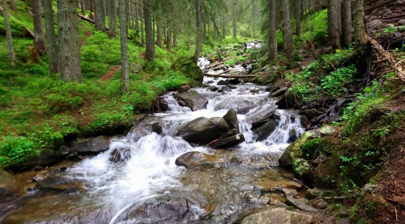
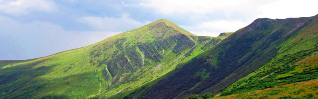

Панорама великої частини Українських Карпат відкривається тим, хто піднявся на вершину Говерли. На виднокраї, аж доки бачить око, – лише сині гори та безкрайня далечінь. Подихом вільного вітру та неосяжними просторами дивує красуня-Говерла кожного, хто здолав стрімкий підйом від самого її підніжжя до вершини. Говерла з висотою над рівнем моря 2061 м є самою високою точкою України і входить до складу гірського пасма Чорногірського хребта. По ньому проходить кордон між Івано-Франківською та Закарпатською областями.
На Чорногорі височіє ще п’ять двотисячників, які за гарної погоди можна побачити з вершини Говерли. Найефектніше з усіх виглядає суворий Петрос (2020 м), який уособлено стоїть навпроти, а по інший бік на головному хребті виглядають Ребра (2001 м), Гутин-Томнатик (2017 м) і Бребенескул (2032 м). А на самому кінці хребта видніється Піп-Іван Чорногірський (2028 м) з унікальною будівлею високогірної обсерваторії на вершині.
Налічується щонайменше шість маршрутів, якими можна піднятися на найвищу вершину України, то ж як вибрати найоптимальніший та найкрасивіший? Розкажемо про найпопулярніші варіанти підйому на Говерлу та розкриємо всі нюанси цих маршрутів.
Біля підніжжя гори розташовано декілька населених пунктів, з яких можна розпочати свій підйом на Говерлу. До них найкраще дістатися автобусом або власною автівкою з Івано-Франківська. Найкоротший варіант підйому на вершину – зі спортивної бази Заросляк, а також є досить популярний варіант сходження з боку села Лазещина та присілка Козьмещик. Користуються популярністю й інші варіанти підйому – з Квасів чи Ясіня із заходом на вершину Петрос, значно рідше туристи піднімаються у високогір’я довгим серпантином з однойменного села Говерла. Мандрівники, що вирішили зайти на всі двотисячники України, зазавичай підіймаються чи спускаються з Говерли в бік Брескула, в такому випадку Говерла є проміжною вершиною у п’яти-шестиденному поході.
Від спортбази “Заросляк” на вершину Говерли беруть початок два маршрути. Вони мають синє та зелене маркування. Ще одне маркування жовтого кольору веде на середину Чорногірського хребта, до вершини Туркул та озера Несамовитого. Зелений маршрут на Говерлу довший, але більш пологий; синє маркування веде стрімкою стежкою “в лоб” на вершину. Щоб побачити більше, за гарної погоди рекомендуємо підійматися на вершину Говерли синім маршрутом, а спускатися – зеленим. Це збереже ваші коліна, адже за таким варіантом спуск буде не таким стрімким. Якщо під час підйому на гору погода змінилася в гірший бік або вам бракує часу – виберіть той шлях, яким підіймалися, – так ви не заблукаєте.
Маршрут починається від триповерхової спортивної бази, до якої можна доїхати з Івано-Франківська через Ворохту. Але останні 12 км шляху доведеться подолати або на власному авто, або на заказному трансфері – рейсові автобуси на Заросляк не ходять. Минувши гірський потік Козьмеський, перший кілометр підйому ви пройдете стежкою по мальовничому смерековому лісі. Згодом густий та тінистий ліс зміниться на чагарникову рослинність – зарості ялівця та гірської сосни. Стежка в цьому місці вузька та досить кам’яниста; треба бути обережним, щоб не перечепитися, не порвати чи не загубити спорядження.
Минувши ялівцеві зарості і вийшовши на східне плече Говерли, зліва можна буде побачити Говерлянський водоспад. Звідси бере свій початок оспівана у легендах річка Прут. Трохи відпочивши та помилувавшись красою гірських краєвидів, які вже відкриються вашим очам, залишиться ще біля 250 метрів набору висоти. Це найскладніша, але в той же час і найкрасивіша ділянка підйому. Спускатися з вершини Говерли на Заросляк можна іншою стежкою, що має зелене маркування.
Крім того, є ще один маршрут із боку Заросляка. Це дводенний похід, в якому учасники не тільки піднімаються на Говерлу, а й здійснюють хайкінг до гірського озера Несамовите. Ночівля проходить у наметах, а значить посиденьки біля вогнища та справжня похідна романтика гарантовані!
Підйом на Говерлу з Козьмещика довший по часу та кілометражу, ніж із Заросляка, але значно мальовничіший. Адже підйом відбувається північно-західним відрогом, звідки Говерла постає у всій своїй красі, як гострокутна вершина пірамідальної форми. Відкривається вид на стрімкі урвища та прямовисні скелі, до яких ви зможете наблизитись впритул. Відріг Говерли, що має північне спрямування, досить довгий та має пологу, майже рівну ділянку, крокуючи якою ви зможете споглядати суворий Петрос з найгарнішого його ракурсу. Від Козьмещика підйом йде затишним лісом, і на висоті 1350 м виходить на полонину Гропа. З Гропи ви вже зможете побачити вершину Говерли, оточену стрімкими схилами, але ще кращий вид на карпатську красуню відкриється з пологої ділянки відрогу на висоті 1650 м.
Стежка по цьому маршруту промаркована жовтим кольором. Під самим передвершинним зльотом на Говерлу розташований маленький дерев’яний будиночок, у якому зручно підкріпитися та випити чаю, або ж перечекати негоду. Хтось каже, що цей останній підйом найважчий, а хтось навпаки вже добре розім’явся завдяки досить плавному набору висоти з боку Козьмещика, і долає останні метри на одному подиху. А подих час від часу все ж перехоплює від краєвидів, адже ми вже у зоні високогір’я та вище більшості карпатських хребтів! І всі вони – як на долоні!
Враховуючи всі переваги підйому на Говерлу з боку Козьмещика, ми розробили класний триденний тур, що передбачає проживання у затишному гуцульському будиночку у Козьмещику, підйом без важких рюкзаків на вершину Говерли, а також цікаві екскурсії до найкрасивіших місць регіону. Серед екскурсій – відвідування водоспадів Пробій, Женецький Гук та Труфанець, джерело з мінеральною водою у Квасах, атракції та видові локації Буковелю, сувенірний ринок у Яремче. Детальніше можна почитати тут: Підйом на Говерлу з комфортом + екскурсії в Буковель, Яремче і до водоспадів.